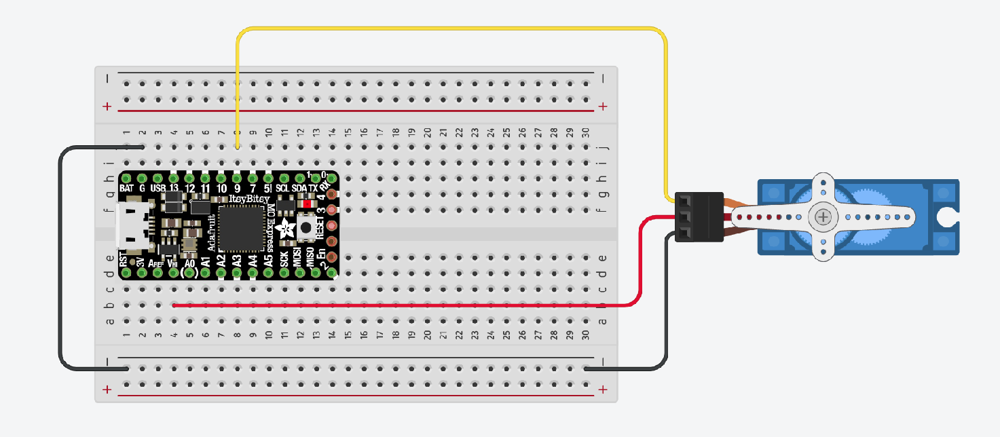
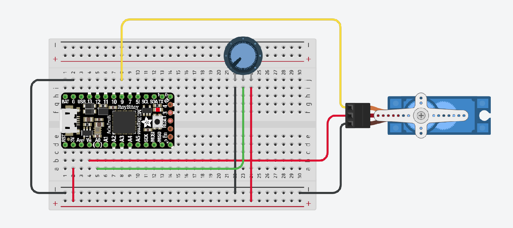

For this workshop, please collect the following:
Useful links for Servo motors:
Most of the actuators we'll look at are "open loop", meaning that we give them commands but don't expect any feedback. Servos are probably the easiest way to add "closed loop" actuation to your project. In industry, the word "servo" is used to describe different kinds of motors than we're using here; "servo" just means "closed loop".
The servos included in your kits are 9g Micro Servos. Take a look at the data sheet to learn useful specifications, like its range of motion (120 degrees, not 180), operating voltage (4.8V-6V), operating speed (60 degrees in 0.09 seconds) and running current (~500mA).
The easiest way to get up and running with a Servo motor is to use the Arduino Servo library. You can find examples at File > Examples > Servo, but minimal usage looks like this:
#include <Servo.h>
Servo myservo; // create servo object to control a servo
void setup() {
myservo.attach(9); // attaches the servo on pin 9 to the servo object
}
void loop() {
myservo.write(90); // commands the servo to jump to its middle position (90 degrees)
}
To run this example, wire up your servo like this:
This code will move your servo as fast as it can to the middle position (90 degrees out of a range of 180).
In most applications, we'll want the servo to do more than just remain at a particular position. Sometimes, we'll want to program a servo to move in a certain way on repeat. With the same wiring, try uploading the following code (from the Arduino "Sweep" example):
#include <Servo.h>
Servo myservo; // create servo object to control a servo
int pos = 0; // variable to store the servo position
void setup() {
myservo.attach(9); // attaches the servo on pin 9 to the servo object
}
void loop() {
for (pos = 0; pos <= 180; pos += 1) { // goes from 0 degrees to 180 degrees
// in steps of 1 degree
myservo.write(pos); // tell servo to go to position in variable 'pos'
delay(15); // waits 15ms for the servo to reach the position
}
myservo.write(0); // send the servo back to 0
delay(2000); // give it enough time to make it there
}
Now see if you can modify the above code by adding a for() loop that makes the servo return to position 0 at exactly half the speed.
Sometimes we'll want a servo to move according to some input. A common usage is having a potentiometer control the servo. Give this a shot; wiring diagram and code below (from the Arduino "Knob" example).

#include <Servo.h>
Servo myservo; // create servo object to control a servo
int potpin = 0; // analog pin used to connect the potentiometer
int val; // variable to read the value from the analog pin
void setup() {
myservo.attach(9); // attaches the servo on pin 9 to the servo object
}
void loop() {
val = analogRead(potpin); // reads the value of the potentiometer (value between 0 and 1023)
val = map(val, 0, 1023, 0, 180); // scale it to use it with the servo (value between 0 and 180)
myservo.write(val); // sets the servo position according to the scaled value
delay(15); // waits for the servo to get there
}